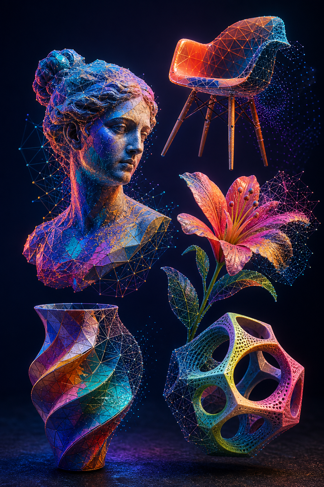
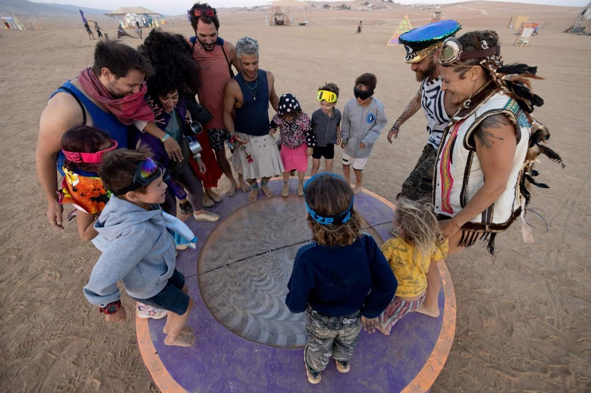

Copy-Transform-Paste
Zero-shot alignment of two 3D meshes using language guidance and geometric constraints for semantically meaningful, physically plausible placement.
Explore publicationComputer Vision Researcher
Exploring generative AI, 3D geometry, and creative technologies.

01

I recently completed an M.Sc. in Computer Science at Reichman University, where I conducted my thesis research at the Canvas Lab.
My research focuses on visual computing, 3D geometry, and generative models. I am interested in how learning-based systems can understand spatial relationships and support the creation of coherent three-dimensional scenes.
I enjoy moving between research and making: developing technical ideas, building visual prototypes, and turning complex systems into clear, engaging experiences.
I am particularly interested in computational creativity, artistic tools, and the intersection of machine learning and visual expression.
02
Questions I keep returning to.
03
Zero-shot alignment of two 3D meshes using language guidance and geometric constraints for semantically meaningful, physically plausible placement.
Explore publication
CAD design and fabrication planning for a collaborative interactive installation built for Midburn.
Explore project